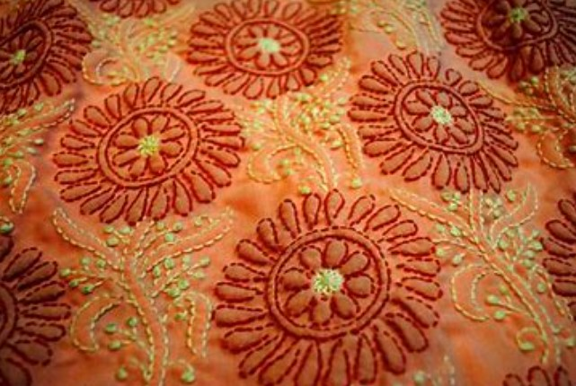

Uttar Pradesh
5 / 5
2023
Chikankari products from Lucknow district in Uttar Pradesh are renowned for their exquisite hand-embroidered details, showcasing intricate and delicate designs. This timeless craftsmanship has a rich heritage and is cherished for its elegance and finesse, attracting admirers both locally and globally. By providing artisans with training, financial support, and market access, the government, through the One District One Product (ODOP) initiative, ensures the continued growth and recognition of Chikankari as a cherished cultural treasure of Lucknow